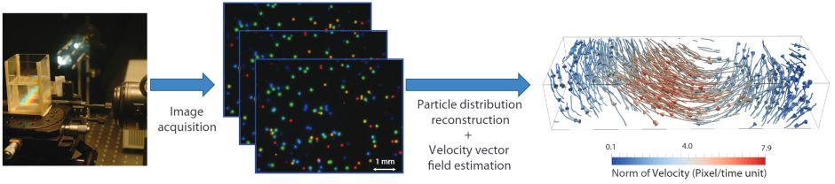

Rainbow Particle Imaging Velocimetry
for Dense 3D Fluid Velocity Imaging
Jinhui Xiong, Ramzi Idoughi, Andres A. Aguirre-Pablo,
Abdulrahman B. Aljedaani, Xiong Dun, Qiang Fu,
Sigurdur T. Thoroddsen, Wolfgang Heidrich
Accepted to ACM Transactions on Graphics (Proc. SIGGRAPH), 2017

Using a rainbow color-coded PIV setup in combination with a hybrid diffractive/refractive camera optics(left) we can encode 3D particle positions in
fluid flows into a single camera image, while keeping all particles in focus simultaneously (center). From a sequence of such images, the 3D particle positions
and the dense fluid vector field can be reconstructed using an optimization-based approach. The vector field is represented as a regular grid covering the
entire flow volume, and can be visualized by showing the path lines of new (synthetic) particles (right).
Abstract
Despite significant recent progress, dense, time-resolved imaging of complex,
non-stationary 3D flow velocities remains an elusive goal. In this work we
tackle this problem by extending an established 2D method, Particle Imaging
Velocimetry, to three dimensions by encoding depth into color. The encoding
is achieved by illuminating the flow volume with a continuum of light planes
(a “rainbow”), such that each depth corresponds to a specific wavelength of
light. A diffractive component in the camera optics ensures that all planes are
in focus simultaneously. With this setup, a single color camera is sufficient
for tracking 3D trajectories of particles by combining 2D spatial and 1D
color information.
For reconstruction, we derive an image formation model for recovering
stationary 3D particle positions. 3D velocity estimation is achieved with a
variant of 3D optical flow that accounts for both physical constraints as well
as the rainbow image formation model. We evaluate our method with both
simulations and an experimental prototype setup.
Paper
paper [Xiong2017RainbowPIV.pdf (13.9MB)]
All images are © ACM 2017, reproduced here by permission of ACM for your personal use. Not for redistribution.